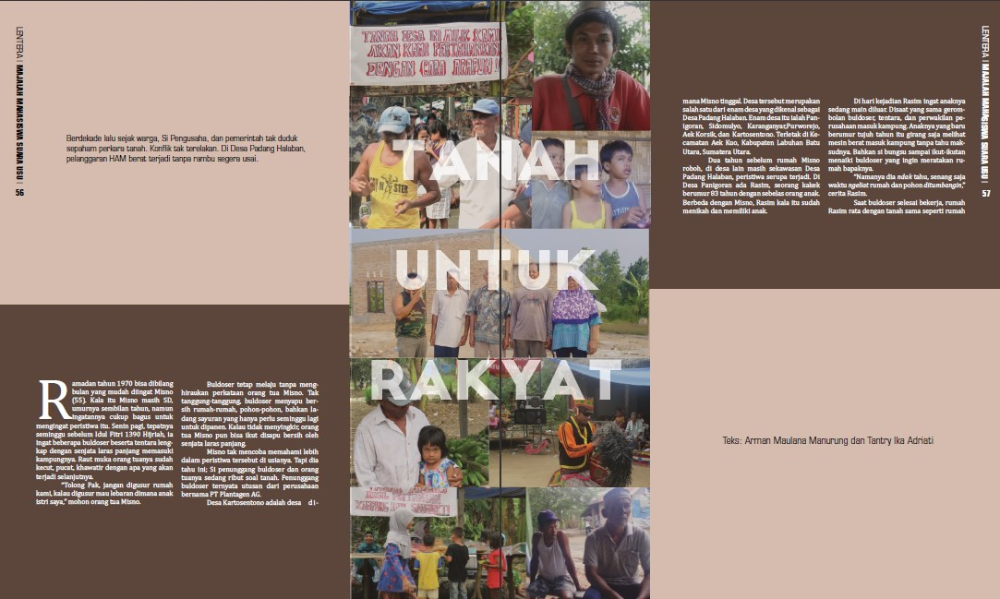

TANTRY IKA ADRIATI
My Dream Adventures to Iceland

trykadri.com - Diverse and beautiful, Iceland is Home. Iceland is known as the island of Ice and Fire.
A land where volcanoes and geothermal heat have made their mark on the landscape,
along with the many glaciers and glacier lagoons. A land of pristine and unspoiled nature.
Rotisserie La Cocorico dan Senja di Ueno

trykadri.com - DINGIN. Angin yang menusuk bagian epidermis tubuh memicu rasa dingin.
Langit mendung dan orang-orang yang masih tahan menembus hujan es di hari Kamis.
Salju pertama telah turun. Layaknya anak-anak yang menunggu kedatangan musim salju menjelang Natal,
mataku tak henti melihat butir-butir putih yang berjatuhan dari atas. “Hai, salju.
Tanah untuk Rakyat

trykadri.com - Ramadan tahun 1970 bisa dibilang bulan yang mudah diingat Misno (55).
Saat itu Misno masih SD, umurnya sembilan tahun, namun ingatannya cukup bagus untuk mengingat peristiwa pagi itu.
Di hari Senin, tepat seminggu sebelum Idul Fitri 1390 Hijriah, ia ingat betul beberapa buldoser beserta
tentara lengkap dengan senjata laras panjang memasuki kampungnya.